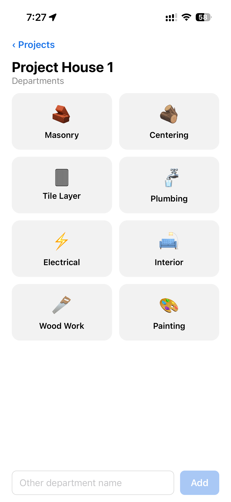
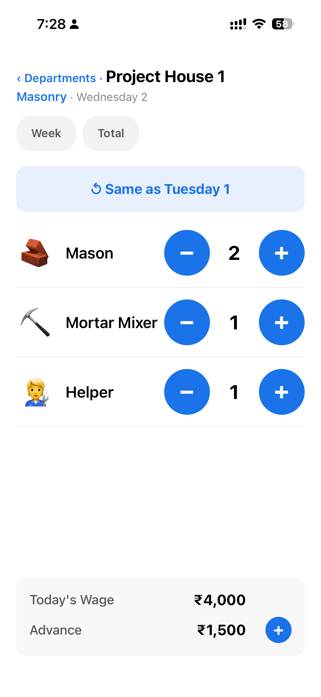
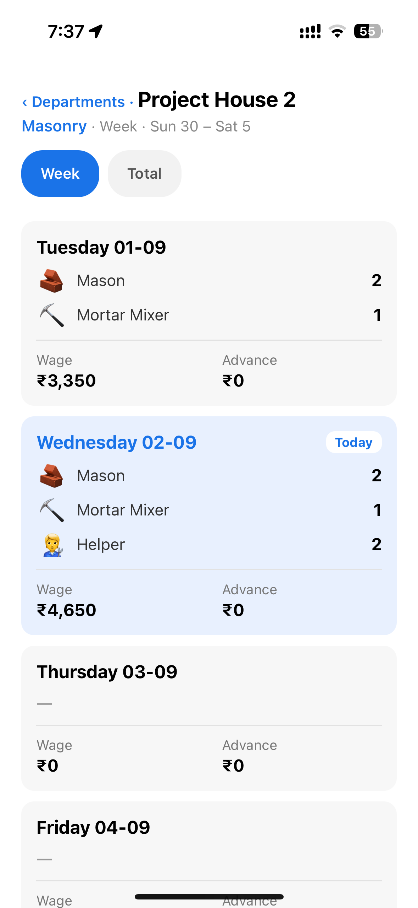
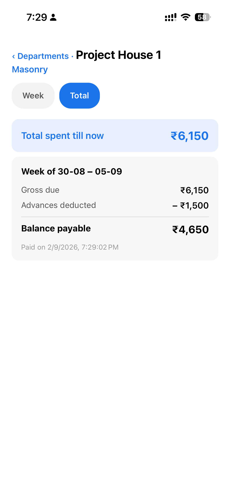

<title>Gowthamraj A — Resume</title>
<meta charset="UTF-8">
<meta name="viewport" content="width=device-width, initial-scale=1.0">
<meta name="description" content="Gowthamraj A — Product &amp; Strategy professional. IIM Bangalore MBA, ex-software developer, targeting Product Management and Technical Program Management roles in BFSI and fintech.">

<meta property="og:title" content="Gowthamraj A — Product &amp; Strategy">
<meta property="og:description" content="IIM Bangalore MBA · 30 months building banking CRM at Wipro · Associate at PwC India. Product and business judgment, backed by engineering depth.">
<meta property="og:image" content="og-preview.png">
<meta property="og:type" content="website">
<meta name="twitter:card" content="summary_large_image">

<link rel="preconnect" href="https://fonts.googleapis.com">
<link rel="preconnect" href="https://fonts.gstatic.com" crossorigin>
<link href="https://fonts.googleapis.com/css2?family=Inter:wght@400;500;600;700;800&display=swap" rel="stylesheet">

<style>
  :root {
    --ink: #1a1d21;
    --ink-soft: #52585f;
    --ink-faint: #8a9099;
    --line: #e3e5e8;
    --paper: #ffffff;
    --panel: #f7f8f9;
    --accent: #0a5c4a;
    --accent-dark: #084a3c;
    --max: 760px;
    --font: "Inter", -apple-system, BlinkMacSystemFont, "Segoe UI", Roboto, Helvetica, Arial, sans-serif;
  }

  * { box-sizing: border-box; }

  html { scroll-behavior: smooth; }

  body {
    margin: 0;
    font-family: var(--font);
    font-size: 18px;
    color: var(--ink);
    background: var(--paper);
    line-height: 1.65;
    -webkit-font-smoothing: antialiased;
    text-rendering: optimizeLegibility;
  }

  a { color: var(--accent); text-decoration: none; }
  a:hover { text-decoration: underline; }

  .wrap {
    max-width: var(--max);
    margin: 0 auto;
    padding: 0 24px;
  }

  /* ---------- Header ---------- */
  header.hero {
    position: relative;
    min-height: 100svh;
    min-height: 100vh;
    display: flex;
    flex-direction: column;
    justify-content: center;
    padding: 64px 0 96px;
  }

  header.hero h1 {
    font-size: clamp(2.75rem, 4vw + 1.5rem, 4.5rem);
    font-weight: 800;
    line-height: 1.04;
    letter-spacing: -0.035em;
    margin: 0 0 22px;
  }

  .positioning {
    font-size: clamp(1.1rem, 0.6vw + 0.95rem, 1.3rem);
    font-weight: 400;
    color: var(--ink-soft);
    line-height: 1.55;
    letter-spacing: -0.005em;
    margin: 0 0 36px;
    max-width: 52ch;
  }

  .contact-row {
    display: flex;
    flex-wrap: wrap;
    align-items: center;
    gap: 8px 12px;
    font-size: 0.95rem;
    color: var(--ink-soft);
    margin-bottom: 40px;
  }

  .contact-row span, .contact-row a { color: var(--ink-soft); }
  .contact-row .dot { color: var(--ink-faint); }
  .contact-row a:hover { color: var(--accent); text-decoration: underline; }

  .cv-btn {
    display: inline-block;
    align-self: flex-start;
    background: var(--accent);
    color: #fff;
    padding: 14px 26px;
    border-radius: 8px;
    font-size: 0.95rem;
    font-weight: 600;
    letter-spacing: -0.005em;
  }
  .cv-btn:hover { background: var(--accent-dark); text-decoration: none; }

  .scroll-cue {
    position: absolute;
    left: 24px;
    bottom: 40px;
    display: flex;
    align-items: center;
    gap: 10px;
    font-size: 0.75rem;
    font-weight: 600;
    letter-spacing: 0.12em;
    text-transform: uppercase;
    color: var(--ink-faint);
  }
  .scroll-cue:hover { color: var(--accent); text-decoration: none; }
  .scroll-cue .line {
    width: 28px;
    height: 1px;
    background: currentColor;
  }

  /* ---------- Sections ---------- */
  section {
    padding: clamp(56px, 9vw, 104px) 0;
    border-bottom: 1px solid var(--line);
  }

  section:last-of-type { border-bottom: none; }

  h2 {
    display: flex;
    align-items: center;
    gap: 20px;
    font-size: 0.8rem;
    font-weight: 600;
    text-transform: uppercase;
    letter-spacing: 0.14em;
    color: var(--accent);
    margin: 0 0 44px;
    white-space: nowrap;
  }

  h2::after {
    content: "";
    flex: 1;
    height: 1px;
    background: var(--line);
  }

  section.about p {
    margin: 0 0 18px;
    color: var(--ink-soft);
    line-height: 1.7;
    max-width: 66ch;
  }
  section.about p:last-child { margin-bottom: 0; }

  /* ---------- Experience ---------- */
  .role { margin-bottom: 44px; }
  .role:last-child { margin-bottom: 0; }

  .role h3 {
    font-size: 1.2rem;
    font-weight: 600;
    letter-spacing: -0.01em;
    margin: 0 0 4px;
  }

  .role .meta {
    font-size: 0.9rem;
    color: var(--ink-faint);
    margin: 0 0 16px;
  }

  .role ul {
    margin: 0;
    padding-left: 22px;
    color: var(--ink-soft);
  }

  .role ul li { margin-bottom: 10px; line-height: 1.65; }
  .role ul li:last-child { margin-bottom: 0; }

  /* ---------- Work cards ---------- */
  .card {
    background: var(--panel);
    border: 1px solid var(--line);
    border-radius: 14px;
    padding: 40px;
    margin-bottom: 24px;
  }
  .card:last-child { margin-bottom: 0; }

  .card h3 {
    font-size: 1.3rem;
    font-weight: 600;
    letter-spacing: -0.01em;
    margin: 0 0 10px;
  }

  .card .summary {
    font-size: 1.05rem;
    color: var(--ink);
    font-weight: 500;
    line-height: 1.5;
    margin: 0 0 20px;
  }

  .card .detail {
    font-size: 1rem;
    color: var(--ink-soft);
    line-height: 1.7;
    margin: 0 0 24px;
  }

  .tags, .pills {
    display: flex;
    flex-wrap: wrap;
    gap: 8px;
  }

  .tag, .pill {
    font-size: 0.82rem;
    font-weight: 500;
    color: var(--ink-soft);
    border: 1px solid var(--line);
    padding: 6px 14px;
    border-radius: 7px;
    white-space: nowrap;
  }

  .tag { background: #fff; }
  .pill { background: var(--panel); }

  .shot-strip {
    display: flex;
    gap: 14px;
    overflow-x: auto;
    padding: 4px 4px 14px;
    margin: 0 0 20px;
    -webkit-overflow-scrolling: touch;
    scroll-snap-type: x proximity;
  }

  .shot-strip img {
    width: 210px;
    flex: 0 0 auto;
    border-radius: 12px;
    border: 1px solid var(--line);
    display: block;
    scroll-snap-align: start;
  }

  /* ---------- Skills ---------- */
  .skill-group { margin-bottom: 24px; }
  .skill-group:last-child { margin-bottom: 0; }

  .skill-group h4 {
    font-size: 0.78rem;
    font-weight: 600;
    color: var(--ink-faint);
    margin: 0 0 14px;
    text-transform: uppercase;
    letter-spacing: 0.08em;
  }

  /* ---------- Education ---------- */
  .edu-item {
    margin-bottom: 20px;
  }
  .edu-item:last-child { margin-bottom: 0; }

  .edu-item h3 {
    font-size: 1.05rem;
    font-weight: 600;
    letter-spacing: -0.005em;
    margin: 0 0 3px;
  }

  .edu-item .meta {
    font-size: 0.9rem;
    color: var(--ink-faint);
    margin: 0;
  }

  /* ---------- Footer ---------- */
  footer {
    padding: 56px 0 80px;
    text-align: center;
    font-size: 0.85rem;
    color: var(--ink-faint);
  }

  /* ---------- Scroll reveal ---------- */
  .reveal {
    opacity: 0;
    transform: translateY(18px);
    transition: opacity 0.7s cubic-bezier(0.16, 0.84, 0.44, 1), transform 0.7s cubic-bezier(0.16, 0.84, 0.44, 1);
  }
  .reveal.visible {
    opacity: 1;
    transform: translateY(0);
  }

  @media (prefers-reduced-motion: reduce) {
    .reveal { opacity: 1; transform: none; transition: none; }
    html { scroll-behavior: auto; }
  }

  /* ---------- Responsive ---------- */
  @media (max-width: 600px) {
    header.hero { padding: 48px 0 88px; }
    .positioning { max-width: 100%; }
    .cv-btn { align-self: stretch; text-align: center; }
    .card { padding: 26px; }
    .scroll-cue { left: 24px; bottom: 28px; }
  }
</style>

<header class="hero wrap">
  <h1>Gowthamraj A</h1>
  <p class="positioning">Product &amp; strategy professional with an engineering core — I diagnose problems, build the business case, and can ship the solution myself.</p>
  <div class="contact-row">
    <span>Bengaluru, India</span>
    <span class="dot" aria-hidden="true">·</span>
    <a href="mailto:gowthamksa24@gmail.com">gowthamksa24@gmail.com</a>
    <span class="dot" aria-hidden="true">·</span>
    <a href="tel:+919597250056">+91 95972 50056</a>
    <span class="dot" aria-hidden="true">·</span>
    <a href="https://linkedin.com/in/gowtham24ksa" target="_blank" rel="noopener">linkedin.com/in/gowtham24ksa</a>
  </div>
  <a class="cv-btn" href="Gowthamraj_A_CV.pdf" target="_blank" rel="noopener">Download CV</a>
  <a class="scroll-cue" href="#about"><span class="line" aria-hidden="true"></span>Scroll</a>
</header>

<main class="wrap">

  <section id="about" class="about reveal">
    <h2>About</h2>
    <p>I started as a software engineer, spent 30 months building a banking CRM platform for Citibank, and used that vantage point to move into product and strategy — first diagnosing an adoption problem that no one had named, then owning the fix end to end. That combination means I can sit with an engineering team and understand what's actually hard, sit with a business stakeholder and quantify what a fix is worth, and when the situation calls for it, build and ship the product myself — I still do, most recently an offline-first Android app I designed, built, and shipped solo for a construction labour crew that reads no English.</p>
    <p>I'm now focused on product management and technical program management roles in BFSI and fintech, where the ability to move fluidly between engineering, business case, and delivery is the job, not a side skill.</p>
  </section>

  <section class="experience reveal">
    <h2>Experience</h2>

    <div class="role">
      <h3>Associate</h3>
      <p class="meta">PwC India, Bengaluru · August 2026 – Present</p>
      <ul>
        <li>Took over an AI tool converting product demo videos into business requirement documents (Azure AI Foundry); rebuilt hardcoded prompting to generalise it across inputs and prioritise generated requirements via MoSCoW.</li>
        <li>Scoped Planner as a practice-wide project management tool and shipped a Power Automate workflow converting email and Teams action items into tracked tasks, now in daily use.</li>
        <li>Modelled projected and actual revenue across the vertical from resourcing, billing rates and normalised capacity, flagging variances and their commercial drivers monthly.</li>
      </ul>
    </div>

    <div class="role">
      <h3>Business Consultant, Strategic Leadership Program</h3>
      <p class="meta">TCS · April 2025 – May 2025</p>
      <ul>
        <li>Led cross-functional discovery to define 50+ KPIs; launched 7 Power BI dashboards on SAP/ERP data, adopted by 15+ plant managers and used as the reference implementation in an enterprise client pitch.</li>
        <li>Authored the product business case for Analytics-as-a-Service and purchase-order automation from vendor price analysis; surfaced ₹3.45Cr in procurement savings and identified a 5% lead-time breach rate.</li>
        <li>Developed a time-series demand model across ₹46.7Cr of inventory to optimise safety-stock coverage; identified ₹3.1Cr in excess stock, enabling stakeholders to release ₹25L+ in working capital.</li>
      </ul>
    </div>

    <div class="role">
      <h3>Software Developer</h3>
      <p class="meta">Wipro Technologies (Citibank engagement), Chennai · October 2021 – April 2024</p>
      <ul>
        <li>Built a custom CRM platform for Citibank to automate relationship manager workflows; identified prospect tracking as an upstream gap and owned the module end to end, enabling $1.56M in new account revenue.</li>
        <li>Authored 10+ feature PRDs and worked through 300+ user stories with Citibank's US-based Product Owner, cutting requirement rework by 30% across 15 production releases.</li>
        <li>Launched a portfolio analytics dashboard surfacing investment performance and contract lifecycles for HNI and Institutional segments, with automated renewal alerts lifting renewal rates from 60% to 75%.</li>
        <li>Coordinated with Citibank stakeholders and internal teams, demoing prospect module releases and converting escalations into scoped backlog items, lifting module CSAT from 75% to 90%.</li>
      </ul>
    </div>
  </section>

  <section class="work reveal">
    <h2>Selected Work</h2>

    <div class="card">
      <h3>Sambalam — construction labour wage tracker</h3>
      <p class="summary">An offline-first Android app that replaced a paper notebook for weekly wage settlement on building sites.</p>

      <div class="shot-strip">
        
        
        
        
      </div>

      <p class="detail">A small-scale building contractor in Tamil Nadu recorded daily labour headcounts and weekly cash settlements by hand, where a miscalculation or a lost page meant paying the wrong amount to a crew. I ran discovery from the notebook itself, established that the underlying problem was outstanding balances rather than expense totals, and shipped a Tamil-first Android app with an English toggle across six sprints: tap-based daily headcount entry, automatic weekly settlement with advance deduction, and per-crew locking so a settled week cannot be altered retrospectively. One constraint drove every decision — the primary user reads no English and operates a smartphone at WhatsApp level — so daily entry requires no typing and a single tap copies the previous working day's crew composition. Built solo end to end: React Native and Expo, local SQLite with no backend so the app functions with no site connectivity, distributed as a direct-install APK with over-the-air updates for remote fixes.</p>

      <div class="tags">
        <span class="tag">Product discovery</span>
        <span class="tag">User research</span>
        <span class="tag">React Native</span>
        <span class="tag">Expo</span>
        <span class="tag">SQLite</span>
        <span class="tag">Offline-first</span>
        <span class="tag">Vernacular UX</span>
        <span class="tag">Sole developer</span>
      </div>
    </div>

    <div class="card">
      <h3>Prospect management module — Citibank CRM</h3>
      <p class="summary">A module I proposed after finding the upstream gap, which contributed to a $1.56M account expansion.</p>
      <p class="detail">While building a CRM platform for Citibank at Wipro, I found that prospects were being tracked in spreadsheets before they ever reached the CRM, so data quality was already degraded by the time records arrived. I proposed a standalone prospect management module that would feed the CRM on conversion, and owned it end to end from proposal through launch. Working with the client's US-based Product Owner, I defined the MVP, wrote the requirements, and shipped 15+ high-priority features with a team of 10. Relationship managers were avoiding the module because a single-page table loaded 30,000+ records at once, taking over 20 seconds — I diagnosed this as the primary adoption barrier and redesigned the table to load in pages, cutting load times to under a second and lifting daily usage from 60% to 85%. Stage-transition alerts across pipelines running 13 stages for institutional clients and 21 for HNI doubled portfolio capacity from 40 to 80 accounts per manager. The module's success contributed to Citibank expanding the engagement, worth $1.56M in new account revenue.</p>
      <div class="tags">
        <span class="tag">Product ownership</span>
        <span class="tag">Requirements definition</span>
        <span class="tag">MVP scoping</span>
        <span class="tag">UX diagnosis</span>
        <span class="tag">Stakeholder management</span>
        <span class="tag">BFSI</span>
        <span class="tag">CRM</span>
      </div>
    </div>

    <div class="card">
      <h3>Analytics-as-a-Service — manufacturing procurement</h3>
      <p class="summary">Discovery, KPI definition, and a business case that surfaced ₹3.45Cr in procurement savings.</p>
      <p class="detail">A manufacturing client had operational data spread across SAP and ERP systems with no consolidated view across plants. I ran discovery with finance, sourcing, and operations to establish what each function actually needed to see, defined 50+ operational KPIs, and built seven Power BI dashboards integrating the underlying data — later used as the reference implementation in an enterprise client pitch. Alongside the delivery, I authored the business case for an Analytics-as-a-Service offering and purchase-order automation, using vendor price analysis to surface ₹3.45Cr in procurement savings and a 5% lead-time breach rate, and modelled time-series demand across ₹46.7Cr of inventory to identify ₹3.1Cr in excess stock.</p>
      <div class="tags">
        <span class="tag">Stakeholder discovery</span>
        <span class="tag">KPI definition</span>
        <span class="tag">Business case</span>
        <span class="tag">Power BI</span>
        <span class="tag">SAP/ERP</span>
        <span class="tag">Demand forecasting</span>
        <span class="tag">Procurement analytics</span>
      </div>
    </div>
  </section>

  <section class="skills reveal">
    <h2>Skills</h2>

    <div class="skill-group">
      <h4>Product</h4>
      <div class="pills">
        <span class="pill">Product discovery</span>
        <span class="pill">MVP scoping</span>
        <span class="pill">Requirements definition</span>
        <span class="pill">Roadmapping</span>
        <span class="pill">UX diagnosis</span>
        <span class="pill">Stakeholder management</span>
      </div>
    </div>

    <div class="skill-group">
      <h4>Delivery</h4>
      <div class="pills">
        <span class="pill">Agile / Scrum</span>
        <span class="pill">Cross-functional team leadership</span>
        <span class="pill">Vendor &amp; client coordination</span>
        <span class="pill">Program delivery</span>
      </div>
    </div>

    <div class="skill-group">
      <h4>Technical</h4>
      <div class="pills">
        <span class="pill">React Native</span>
        <span class="pill">SQL</span>
        <span class="pill">System design</span>
        <span class="pill">API integration</span>
        <span class="pill">SDLC</span>
      </div>
    </div>

    <div class="skill-group">
      <h4>Data</h4>
      <div class="pills">
        <span class="pill">Power BI</span>
        <span class="pill">Financial modelling</span>
        <span class="pill">KPI design</span>
        <span class="pill">Demand forecasting</span>
      </div>
    </div>

    <div class="skill-group">
      <h4>Domain</h4>
      <div class="pills">
        <span class="pill">BFSI</span>
        <span class="pill">Fintech</span>
        <span class="pill">CRM platforms</span>
        <span class="pill">Procurement &amp; supply chain</span>
      </div>
    </div>
  </section>

  <section class="education reveal">
    <h2>Education &amp; Certifications</h2>

    <div class="edu-item">
      <h3>MBA, Indian Institute of Management Bangalore</h3>
      <p class="meta">2026</p>
    </div>

    <div class="edu-item">
      <h3>BE, Computer Science — CEG, Anna University</h3>
      <p class="meta">2021</p>
    </div>

    <div class="edu-item">
      <h3>CFA Level I Cleared</h3>
      <p class="meta">2025</p>
    </div>
  </section>

</main>

<footer>
  Gowthamraj A · Bengaluru, India
</footer>

<script>
  (function () {
    var items = document.querySelectorAll('.reveal');
    if (!('IntersectionObserver' in window)) {
      items.forEach(function (el) { el.classList.add('visible'); });
      return;
    }
    var io = new IntersectionObserver(function (entries) {
      entries.forEach(function (entry) {
        if (entry.isIntersecting) {
          entry.target.classList.add('visible');
          io.unobserve(entry.target);
        }
      });
    }, { threshold: 0.1 });
    items.forEach(function (el) { io.observe(el); });
  })();
</script>
